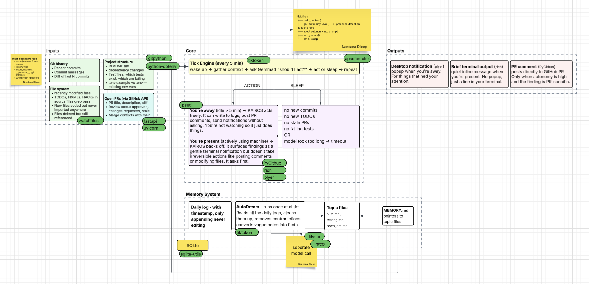

KAIROS watches your codebase while you work. It finds TODOs, flags stale PRs, and posts useful comments — without interrupting your flow.
KAIROS ticks every 5 minutes, reads everything, and speaks only when it has something useful to say.
Reads git history, modified files, TODOs, FIXMEs, HACKs, and missing env keys on every tick.
Detects if you're at your Mac via idle time. Loud when you're away, quiet when you're present.
When it finds something relevant to an open PR, it posts a comment autonomously — prefixed with KAIROS:.
Every night it consolidates what it observed into a rolling MEMORY.md so it gets smarter over time.
Steps away for 5 min? You'll get a native Mac notification with whatever it found.
Logs every action to SQLite. Won't surface the same nudge twice in the same day.
Every minute: build context → detect presence → ask the model → act or sleep.

Requires Python 3.10+, a Groq API key, and a GitHub personal access token.
git clone https://github.com/nandanadileep/Kairos-mini.git cd Kairos-mini python3 -m venv .venv && source .venv/bin/activate pip install -r requirements.txt
Copy the example and fill in your keys.
cp .env.example .env
| Key | Description | |
|---|---|---|
| GITHUB_TOKEN | required | Personal access token with repo scope |
| GITHUB_REPO | required | Repo to watch, e.g. username/repo |
| GROQ_API_KEY | required | From console.groq.com — free tier works |
| GOOGLE_AI_STUDIO_KEY | required | From aistudio.google.com — for tick model |
| KAIROS_REPO_PATH | required | Absolute path to your local repo |
| OLLAMA_BASE_URL | optional | Defaults to http://localhost:11434 |
python3 main.py
KAIROS starts silently. It will print a line only when it has something useful to say.
Inspired by the KAIROS agent architecture described in Anthropic's Claude Code behavioral specification.